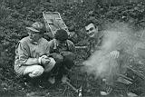
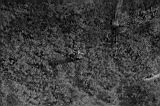

Давно
Бывает же такое, роешься в каком-то хламе и вдруг неожиданно находишь
вещь, которая напоминает о давно забытом прошлом.
Вот и у меня обнаружилась, да не простая, а фотографическая. Кто-то подумал:
"И у меня фоток много". А вам приходилось обнаружить фотоплёнку
в ужасном, грязном состоянии в подвале трёхэтажного дома, в котором живёт
бабушка. И даже не помню было ли это напечатано.

Скорее всего, это 1993 год. Картинки напомнили то время, когда лучшими
трэкинговыми ботами были кеды или сапоги резиновые, а лучше чтоб было
и то и другое на случай внезапной перемены погоды.
Лучшая мембранная одежда это любая одежда которой не жалко.
.
.
.

.
.
И вот ведь какая штука - на фотках самые любимые и дорогие мне люди,
двое уже давно общаются с праотцами, а из живых самый ближний живёт за
4000 километров.
.
.
. 
Пестов Алексей (Март 2009)
|